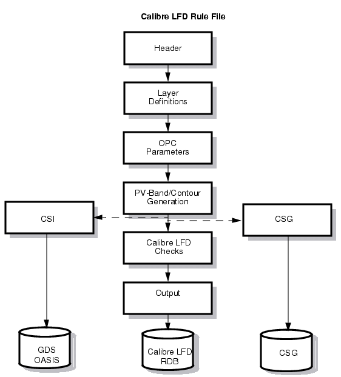

CSI layers and
CSG files are two different outputs generated based on Calibre LFD
contours. Typically, you create a single rule file that produces
both these outputs. When these functions are incorporated into a
standard Calibre LFD rule file, you can perform standard Calibre
LFD checks at the same time that it generates the simplified contours
and the CSG file.
This procedure describes a basic procedure
for creating such a rule file based on an existing Calibre LFD rule
file, and then using it to generate the outputs required by MBE.
Figure 1. Calibre LFD Rule
File for Running CSI and CSG
Procedure
- Edit the TVF rule file as
needed, based on these guidelines:
- Use standard TVF statements
to generate a “seed” layer identifying the gate regions.
- Make sure the rule file contains
the LFD::PVband functions
needed to generate PV-bands for each process condition on each layer (typically
poly, active and metal).
- Include the CSG function once
for each poly condition / active condition pair, writing the output
of each function to a separate file.
If you are investigating N
process conditions for the poly layer and M process conditions for
the active layer, you issue the CSG function N*M times.
- Include the CSI function once
for each process condition for the poly layer, using the -layerOut
to write the output to a unique layer. (Optional)
- Include the CSI function once
for each process condition for the metal layer(s). using -layerOut
to write the output to a unique layer.(Optional)
- Include DRC CHECK MAP statements
to write each of the CSI output layers to the CSI GDS or OASIS database.
- For each layer under investigation,
make sure there are DRC CHECK MAP statements to write the original
drawn layers and the layers containing the contours at nominal conditions
to the RDB.
- Create ASCII summary file
of all transistor, all process conditions, both designs, for spreadsheet
analysis. (Optional)
- Run Calibre LFD using the
rule file you modified in step 1. Be sure to supply the -lfd and
-hier switches. In most cases you also want to run using -turbo
and -turbo_litho.
When the run completes you
have the following files:
One CSG file for each poly
condition/ active condition pair. These files are located in the
output directory.
An RDB containing the CSI
results layers, drawn layers, and nominal contour layers.
An ASCII summary file summarizing
the results for future use in spreadsheet analysis. This file contains
descriptions of all transistors and all process conditions. This
is optional.